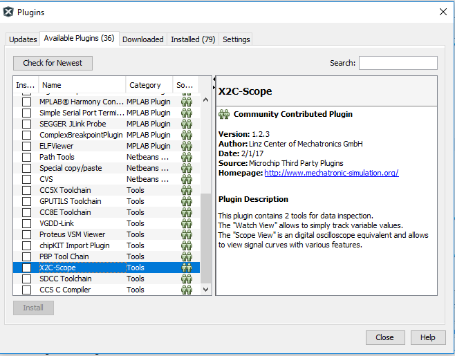
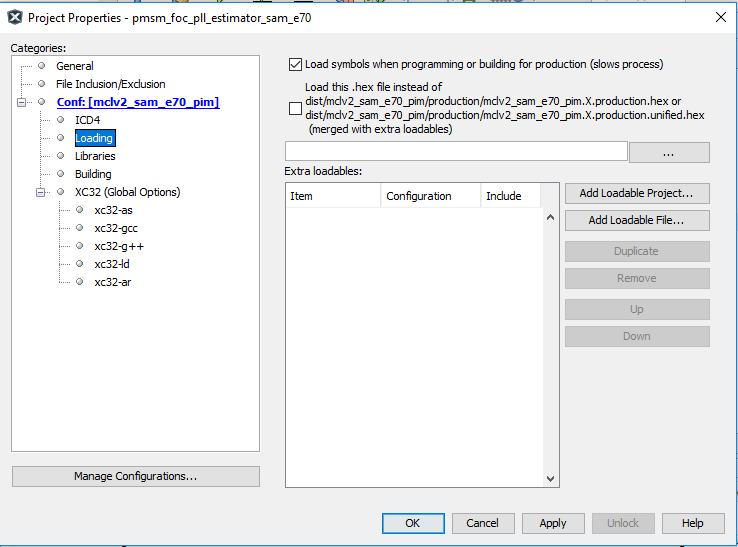
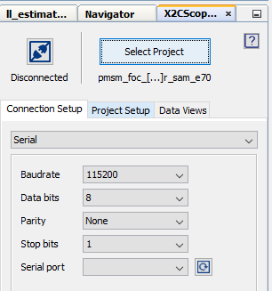
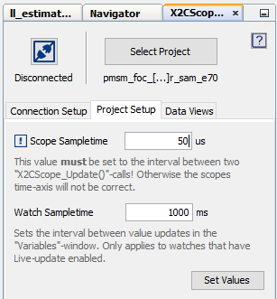

The MPLAB X IDE enables use of the X2C-Scope plug-in to read, write, and plot global variables in real time. The X2C-Scope communicates with the target using the UART. The baud rate of the UART communication can be modified using the MHC.
1. If not already installed, in MPLAB X IDE, select Tools > Plugins > Available Plugins > Select X2C-Scope> Install.
2. Restart MPLAB X IDE to complete the plug-in installation.

3. Open the X2CScope by selecting Tools > Embedded > X2CScope.
4. Ensure the symbols are loaded during the project build by selecting Project Properties > Selected Configuration > Loading, and ensure that the check box for Load Symbols when programming or building for production (slows process) is selected. If this check box was not selected, rebuild the project and reprogram the device.

5. In the X2CScope Configuration tab, select the project.

6. In the Connection Setup, set the Baud Rate to '115200', Data bits to '8', Parity to 'None', Stop Bits to '1', and then select the associated COM port.

7. In Project Setup, Set the Scope Sampletime to '50 us.' This is equal to PWM frequency. Set the Watch Sample time to a value at which you want to update the watch window variables (the default is 1000 ms). Click Set Values after setting the Scope Sampletime and Watch Sampletime.

9. In Data Views, select Open Scope View to plot any two global variables in run-time.
10. In Data Views, select Open Watch View to read or write to any global variables in run time.
|
Microchip 32-bit Motor Control
|